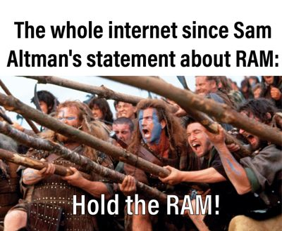
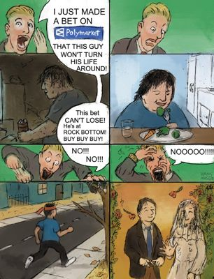
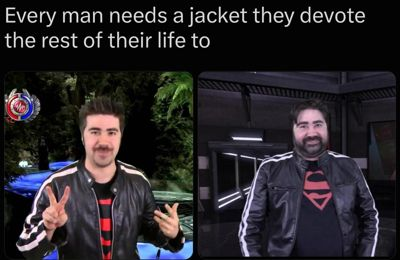
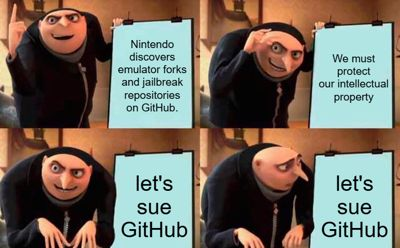

TOP 10 MEMES TODAY
-

1. MACAULAY CULKIN GOES AS THE 'THOUSAND-YARD STARE' MEME FOR HALLOWEEN
Credit: posted by @DiscussingFilm on X. © its owner; shown in small form for ranking and commentary. View originalWhy it ranks: 352,569 likes / 16.27M views on the DiscussingFilm post (X API, Nov 2). Reposted widely (@PicturesFoIder, @BuzzingPop). KYM Thousand-Yard Stare entry 120,627 views. -
“I have this great idea for a drug called Regretamine. One dose and all your regrets are gone!”
2. ELON MUSK JOKES ABOUT A DRUG CALLED 'REGRETAMINE'... REPLIES RUN WILD
Credit: posted by @elonmusk on X. © its owner; shown in small form for ranking and commentary. View originalWhy it ranks: 82,622 likes / 7.40M views (X API, Nov 2). X News story on the spin-off memes. -

3. ALTMAN: DRAM IN HOME PCS IS 'QUITE TERRIBLE' ALLOCATION... INTERNET HIDES ITS DIMMS
Credit: posted by u/famsteve20015 on r/memes. © its owner; shown in small form for ranking and commentary. View originalWhy it ranks: #1 on r/memes top-this-week. X News trending story; @dengeplus clip 755K views. Sparked by Sam Altman's remark on the Cheeky Pint podcast (Oct 29, per the episode transcript) that DRAM sitting in personal computers is a 'quite terrible' use of limited supply. -

4. 'HOLD THE RAM!': REDDIT GOES FULL BRAVEHEART OVER ALTMAN'S RAM REMARK
Credit: posted by u/SirDoritos1 on r/memes. © its owner; shown in small form for ranking and commentary. View originalWhy it ranks: #1 on r/memes top-today (Nov 2), also #2 on r/dankmemes; #8 on r/memes top-this-week. RAM memes also hold #1 on r/dankmemes today. -

5. 'POTATOES AFTER A FEW DAYS IN THE BAG': A WALRUS COLONY STANDS IN FOR SPROUTING SPUDS
Credit: posted by u/Awkward-Comedian-506 on r/memes. © its owner; shown in small form for ranking and commentary. View originalWhy it ranks: #2 on r/memes top-today (Nov 2). -

6. 'GOOD ENDING': REDDIT COMIC'S BET AGAINST A STRANGER'S COMEBACK GOES BUST
Credit: posted by u/Such_Pickle_2337 on r/memes. © its owner; shown in small form for ranking and commentary. View originalWhy it ranks: #3 on r/memes top-today (Nov 2). Comic: a prediction-market bettor wagers a down-and-out man won't turn his life around, and loses. -

7. BUNKER SURVIVOR ATE ALL THE FOOD: 'I'M CURRENTLY BULKING'
Credit: posted by u/Primary-Cancel-6706 on r/memes. © its owner; shown in small form for ranking and commentary. View originalWhy it ranks: #4 on r/memes top-today (Nov 2). -

8. 'THE JACKET STILL WORKS': ANGRY JOE'S SAME JACKET, YEARS APART
Credit: posted by u/Round-Good1179 on r/dankmemes. © its owner; shown in small form for ranking and commentary. View originalWhy it ranks: #3 on r/dankmemes top-today (Nov 2): 'Every man needs a jacket they devote the rest of their life to', with two photos of YouTuber Angry Joe in the same jacket. -

9. GRU'S PLAN, NINTENDO LEGAL EDITION: REDDIT JOKES 'LET'S SUE GITHUB'
Credit: posted by u/RecreatorofPES on r/memes. © its owner; shown in small form for ranking and commentary. View originalWhy it ranks: #7 on r/memes top-today (Nov 2). Satirical Gru's Plan template about emulator forks on GitHub; a joke, not a report of any lawsuit.